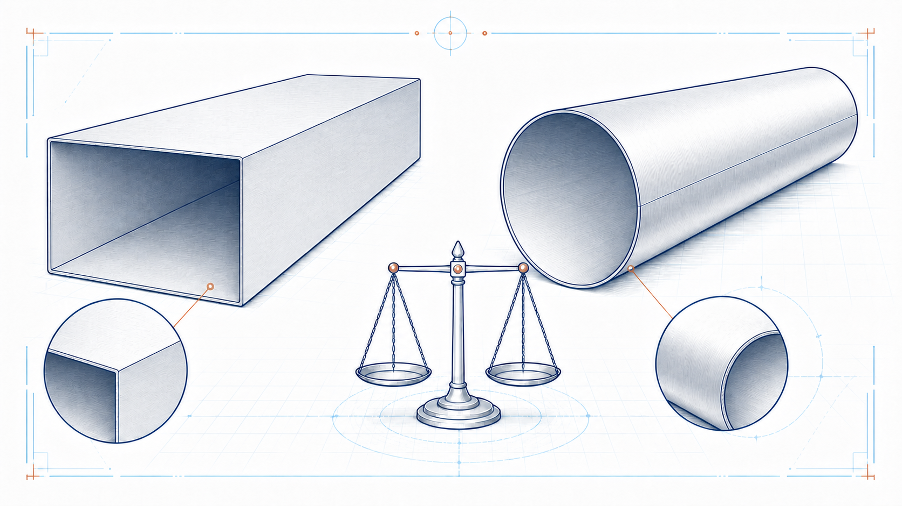

Rectangular duct
A = 2(W + H)L
A is developed sheet area; W and H are duct dimensions; L is straight length.
 IndustrialCalculation HubSearch topics, tools, articles...⌕
IndustrialCalculation HubSearch topics, tools, articles...⌕Existing engineering calculator
Estimate the sheet-metal area, weight per metre and total weight of a straight rectangular or circular duct. Use it for preliminary fabrication, handling and support-planning checks.

Select the duct geometry, then enter the straight duct dimensions, sheet thickness and material. Results update for valid input values.
Choose a commonly fabricated duct-sheet material. Verify the supplied density for project material, coating and temperature.
Engineering knowledge
The weight of a straight sheet-metal duct is obtained from its developed surface area, material thickness and material density. This helps preliminary fabrication planning, handling studies, transport estimates and support-load assessments. A complete installed duct system can weigh more because of flanges, stiffeners, reinforcements, gaskets, insulation, coatings and accessories.
Use plate geometry and density consistently. Material density is an estimate and should be verified where procurement, structural design or a final bill of material depends on the result.
Read the Plate Weight Calculator guidance →A = 2(W + H)L
A is developed sheet area; W and H are duct dimensions; L is straight length.
A = πDL
D is duct diameter and L is straight length; end caps are not included.
m = A × t × ρ
t is sheet thickness and ρ is material density. The calculator converts millimetres to metres internally.
For a 1,500 mm × 1,200 mm rectangular duct, 2,500 mm long, using 3 mm steel at 7,850 kg/m³, the implemented relation gives 13.500 m² sheet area and approximately 317.93 kg total sheet weight, or 127.17 kg/m. This excludes the weight of connection and support details.
No. Use the Flange Weight Calculator and add the relevant fabrication details separately.
No. The calculator uses the selected sheet material only. Insulation, cladding and lining must be assessed separately.
No. It is a preliminary sheet-weight estimate. Final support design must include the complete installed load case and applicable project requirements.
This is an original educational summary. Verify project material data and fabrication allowances for actual work.